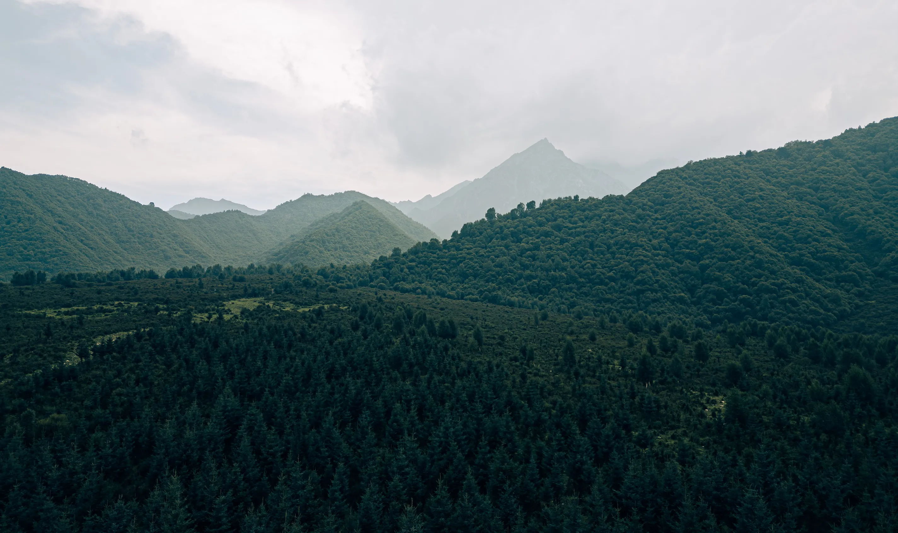

01

Plateau, salt, and long light.
Temple red, salt-lake white, alpine water, and the slow geometry of roads crossing a high landscape.
Open seriesOnline gallery / 2023-2026
A archive built around mountains, temple corridors, city density, and the moments between destinations.


Selected series
Embark on a journey through five distinct chapters, weaving together the divergent souls and untold stories that bridge the landscapes of Japan and China.

Temple red, salt-lake white, alpine water, and the slow geometry of roads crossing a high landscape.
Open series
Tokyo, Kyoto, Fuji, and Osaka edited as a sequence of repetition, contrast, and quiet intervals.
Open series
Stone, lake, timber, and soft afternoon haze around one of Beijing's most composed landscapes.
Open series
A dense urban chapter where bridges, towers, traffic, and river reflections compete for the frame.
Open series
Blue Moon Valley and Jade Dragon Snow Mountain shaped into a short, spare winter sequence.
Open series
Photographer
A personal archive for travel photographs, field notes, and experiments in building a calmer image-first website.
Read the noteNext folders
Xinjiang is planned for 2026. The archive page keeps unfinished folders visible without letting them dilute the finished sequence.
Open archive